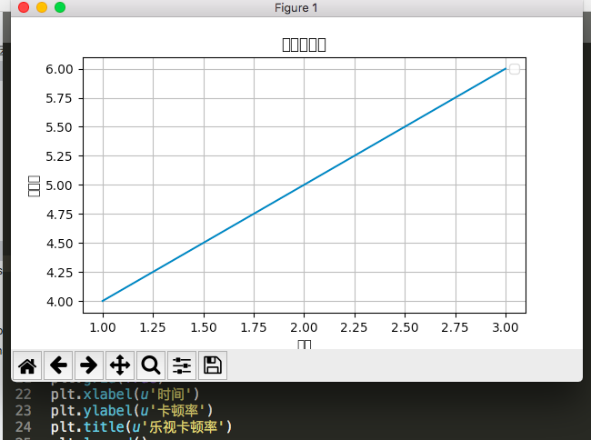

matplotlib中文乱码问题
一、环境¶
OS：macOS High Sierra 10.13.6
python：v2.7.15
matplotlib：v2.2.3
二、现象¶

如上图所示，使用matplotlib库生成的图中，中文文字无法正常显示（乱码）。经过一番摸索，解决方案总结如下：
三、原因¶
之所以中文会乱码，是因为matplotlib默认使用的字体列表中是没有中文字体的，且matplotlib默认使用的字体不支持中文。
1、matplotlib库中已支持的字体¶
1 2 3 4 5 6 7 8 9 10 | #!/usr/bin/env python # -*- coding: UTF-8 -*- ''' 列出所有已支持的字体文件名 ''' import matplotlib.font_manager a=sorted([f.name for f in matplotlib.font_manager.fontManager.ttflist]) for i in a: print i |
字体列表(点击展开)
1 2 3 4 5 6 7 8 9 10 11 12 13 14 15 16 17 18 19 20 21 22 23 24 25 26 27 28 29 30 31 32 33 34 35 36 37 38 39 40 41 42 43 44 45 46 47 48 49 50 51 52 53 54 55 56 57 58 59 60 61 62 63 64 65 66 67 68 69 70 71 72 73 74 75 76 77 78 79 80 81 82 83 84 85 86 87 88 89 90 91 92 93 94 95 96 97 98 99 100 101 102 103 104 105 106 107 108 109 110 111 112 113 114 115 116 117 118 119 120 121 122 123 124 125 126 127 128 129 130 131 132 133 134 135 136 137 138 139 140 141 142 143 144 145 146 147 148 149 150 151 152 153 154 155 156 157 158 159 160 161 162 163 164 165 166 167 168 169 170 171 172 173 174 175 176 177 178 179 180 181 182 183 184 185 186 187 188 189 190 191 192 193 194 195 196 197 198 199 200 201 202 203 204 205 206 207 208 209 | .Keyboard .LastResort .SF Compact Display .SF Compact Display .SF Compact Display .SF Compact Display .SF Compact Display .SF Compact Display .SF Compact Display .SF Compact Display .SF Compact Display .SF Compact Rounded .SF Compact Rounded .SF Compact Rounded .SF Compact Rounded .SF Compact Rounded .SF Compact Rounded .SF Compact Rounded .SF Compact Rounded .SF Compact Rounded .SF Compact Text .SF Compact Text .SF Compact Text .SF Compact Text .SF Compact Text .SF Compact Text .SF Compact Text .SF Compact Text .SF Compact Text .SF Compact Text .SF Compact Text .SF Compact Text .SF NS Display Condensed .SF NS Display Condensed .SF NS Display Condensed .SF NS Display Condensed .SF NS Display Condensed .SF NS Display Condensed .SF NS Display Condensed .SF NS Display Condensed .SF NS Display Condensed .SF NS Text Condensed .SF NS Text Condensed .SF NS Text Condensed .SF NS Text Condensed .SF NS Text Condensed .SF NS Text Condensed Andale Mono Apple Braille Apple Braille Apple Braille Apple Braille Apple Braille Apple Chancery Apple Symbols AppleGothic AppleMyungjo Arial Arial Arial Arial Arial Black Arial Narrow Arial Narrow Arial Narrow Arial Narrow Arial Rounded MT Bold Arial Unicode MS Ayuthaya Big Caslon Bodoni 72 Smallcaps Bodoni Ornaments Bradley Hand Brush Script MT Chalkduster Comic Sans MS Comic Sans MS Courier New Courier New Courier New Courier New DIN Alternate DIN Condensed DejaVu Sans DejaVu Sans DejaVu Sans DejaVu Sans DejaVu Sans Display DejaVu Sans Mono DejaVu Sans Mono DejaVu Sans Mono DejaVu Sans Mono DejaVu Serif DejaVu Serif DejaVu Serif DejaVu Serif DejaVu Serif Display Diwan Thuluth Farisi Georgia Georgia Georgia Georgia Gurmukhi MT Herculanum Hoefler Text Impact Khmer Sangam MN Kokonor Krungthep Lao Sangam MN Luminari Microsoft Sans Serif Mishafi Mishafi Gold Plantagenet Cherokee STIXGeneral STIXGeneral STIXGeneral STIXGeneral STIXGeneral STIXGeneral STIXGeneral STIXGeneral STIXIntegralsD STIXIntegralsD STIXIntegralsSm STIXIntegralsSm STIXIntegralsUp STIXIntegralsUp STIXIntegralsUpD STIXIntegralsUpD STIXIntegralsUpSm STIXIntegralsUpSm STIXNonUnicode STIXNonUnicode STIXNonUnicode STIXNonUnicode STIXNonUnicode STIXNonUnicode STIXNonUnicode STIXNonUnicode STIXSizeFiveSym STIXSizeFiveSym STIXSizeFourSym STIXSizeFourSym STIXSizeFourSym STIXSizeFourSym STIXSizeOneSym STIXSizeOneSym STIXSizeOneSym STIXSizeOneSym STIXSizeThreeSym STIXSizeThreeSym STIXSizeThreeSym STIXSizeThreeSym STIXSizeTwoSym STIXSizeTwoSym STIXSizeTwoSym STIXSizeTwoSym STIXVariants STIXVariants Sathu Silom Skia Source Han Sans CN Symbol System Font System Font System Font System Font System Font System Font System Font System Font System Font System Font System Font System Font System Font Tahoma Tahoma TeamViewer12 Times New Roman Times New Roman Times New Roman Times New Roman Trattatello Trebuchet MS Trebuchet MS Trebuchet MS Trebuchet MS Verdana Verdana Verdana Verdana Webdings Wingdings Wingdings 2 Wingdings 3 Zapf Dingbats Zapfino cmb10 cmex10 cmmi10 cmr10 cmss10 cmsy10 cmtt10 |
2、字体名所代表的具体字体¶
每个英文名具体代表的是系统中的哪个字体，可以从~/.matplotlib/fontList.json文件中查看，以上面列表末尾的cmtt10为例，可以看到cmtt10对应的配置为：
1 2 3 4 5 6 7 8 9 10 | { "style": "normal", "name": "cmtt10", "weight": 400, "fname": "/usr/local/lib/python2.7/site-packages/matplotlib/mpl-data/fonts/ttf/cmtt10.ttf", "stretch": "normal", "_class": "FontEntry", "variant": "normal", "size": "scalable" }, |
显而易见，cmtt10对应的具体字体文件为/usr/local/lib/python2.7/site-packages/matplotlib/mpl-data/fonts/ttf/cmtt10.ttf
四、解决方法(以mac为例)¶
通过以上的原因分析，我们要解决中文乱码的问题，要做以下操作：
1、使中文字体被加载到¶
font_manager.py分析(点击展开)
根据font_manager.py中的get_fontext_synonyms函数的定义：
1 2 3 4 5 6 7 8 | def get_fontext_synonyms(fontext): """ Return a list of file extensions extensions that are synonyms for the given file extension *fileext*. """ return {'ttf': ('ttf', 'otf'), 'otf': ('ttf', 'otf'), 'afm': ('afm',)}[fontext] |
font_manager.py中OSXFontDirectories列表定义的字体目录如下：
1 2 3 4 5 6 7 | OSXFontDirectories = [ "/Library/Fonts/", "/Network/Library/Fonts/", "/System/Library/Fonts/", # fonts installed via MacPorts "/opt/local/share/fonts" "" |
/Library/Fonts/、Network/Library/Fonts/、/System/Library/Fonts/、/opt/local/share/fonts、$PYTHON_PATH/site-packages/matplotlib/mpl-data/fonts/ttf、$PYTHON_PATH/site-packages/matplotlib/mpl-data/fonts/afm这些目录下面加载.ttf、.otf和.afm三种后缀的字体文件1.1、下载中文字体¶
下载.ttf格式的中文字体到/Library/Fonts/目录中,具体方法请自行百度。
1.2、重新加载字体¶
1 2 3 | #!/usr/bin/env python import matplotlib.font_manager as fm fm._rebuild() |
再次查看已加载到的字体列表，验证新下载的字体是否已经被加载到
2、设置字体¶
2.1、plt.rcParams设置默认字体¶
在.py文件中通过plt.rcParams设置matplotlib库使用的默认字体
1 2 3 4 5 6 7 8 9 10 11 12 13 14 15 16 | #!/usr/bin/env python # -*- coding: UTF-8 -*- import sys reload(sys) sys.setdefaultencoding('utf-8') import matplotlib.pyplot as plt plt.rcParams['font.family']=['Source Han Sans CN'] plt.plot([1,2,3],[4,5,6],label='示例') plt.grid(True) plt.xlabel(u'时间') plt.ylabel(u'卡顿率') plt.title(u'乐视卡顿率') plt.legend() plt.show() |
2.2、font_manager设置局部字体¶
此方法可以省略上面的
fm._rebuild()，但此方法有个缺陷就是不能在plt.plot中添加fontpropertie属性。
1 2 3 4 5 6 7 8 9 10 11 12 13 14 15 16 17 18 | #!/usr/bin/env python # -*- coding: UTF-8 -*- import sys reload(sys) sys.setdefaultencoding('utf-8') import matplotlib.pyplot as plt import matplotlib.font_manager as fm fontpath = '/Library/Fonts/Songti.ttc' myfont = fm.FontProperties(fname=fontpath) plt.plot([1,2,3],[4,5,6]) plt.grid(True) plt.xlabel(u'时间',fontproperties=myfont) plt.ylabel(u'卡顿率',fontproperties=myfont) plt.title(u'乐视卡顿率') plt.legend() plt.show() |
3、查看效果¶
可以看到，中文字体已经被正确显示出来。